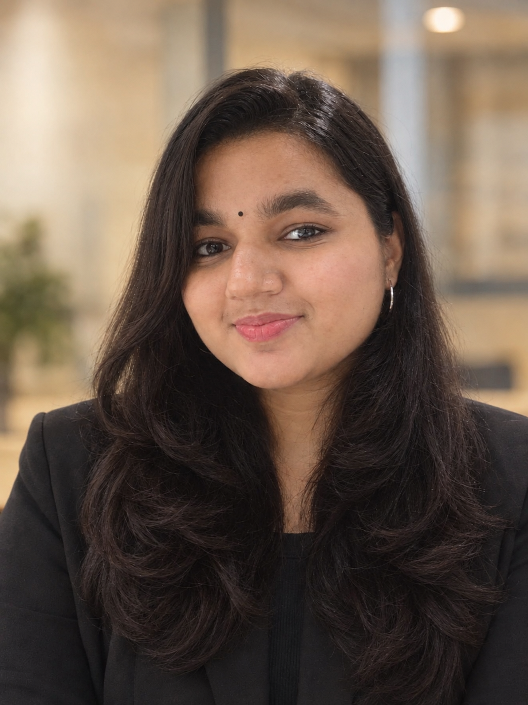

An Operations Layer for LLM-Maintained Personal Knowledge Bases
Shreya Kumari, Habib Baluwala, Bandar AlShammari

Research Engineer in Machine Learning at MedOS Tech
Shreya is a Research Engineer at MedOS Tech in Abu Dhabi, working on agentic LLM systems, RAG, memory, and evaluation. She collaborates with Prof. Imran Razzak at MBZUAI on clinical-trial World Models, and with Prof. Zhiguang Cao at SMU on FAROS, a World Model planner for dynamic vehicle routing. She also worked at MI Lab, IIT Madras on TransChem and Archemist (ROS-based robotic materials discovery), and built GuruSetu at CIFIL Lab, IIT Madras. Her research has three threads: agentic retrieval and routing, LLM memory infrastructure, and World Models for science and planning. She is completing a B.S. in Data Science and Applications at IIT Madras.
Shreya Kumari, Habib Baluwala, Bandar AlShammari
Ashish Mehta, Shreya Kumari, Abhijit Das, Imran Razzak
Abhijit Das, Ashish Mehta, Debasmita Biswas, Shreya Kumari, Nichula Sathmith Wasalathilaka, Behzad Bozorgtabar, Dwarikanath Mahapatra, Imran Razzak
Abhijit Das, Debasmita Biswas, Shreya Kumari, Nichula Sathmith Wasalathilaka, Dwarikanath Mahapatra, Imran Razzak
Muna Al-Hawawreh; Shreya Kumari; Muhammad Hammad; Ashish Mehta; Hirusha Adikari; Habib Baluwala; Bandar Alshammari
Evidence-driven world model using OpenFDA, PubMed, and DrugBank for treatment-response simulation — MBZUAI collaboration (Prof. Imran Razzak).
Generative World Model of future requests for dynamic CVRP; 21% shorter travel vs nearest dispatch. With Zhiguang Cao, SMU.
Full-stack platform at CIFIL Lab, IIT Madras — database, backend APIs, and React frontend.
3-model generate–critique–synthesize council (Groq, Ollama, Mistral) with agreement scoring and confidence-aware fallback.
Modular Python engine with market/signal/order/fill events; CUDA/Numba/CuPy kernels for 15× speedup on 1M+ points.
B.S. in Data Science & Applications
Indian Institute of Technology Madras
2023 – Sept 2026 · CGPA 8.49/10
Prof. Rohit Batra — IIT Madras / WSAI
rbatra@smail.iitm.ac.in
Prof. ThenMozhi M — DoMS, IIT Madras
mtm@iitm.ac.in
Based in Chennai, India · open to research collaborations on medical AI, LLMs, agentic systems, and world models.